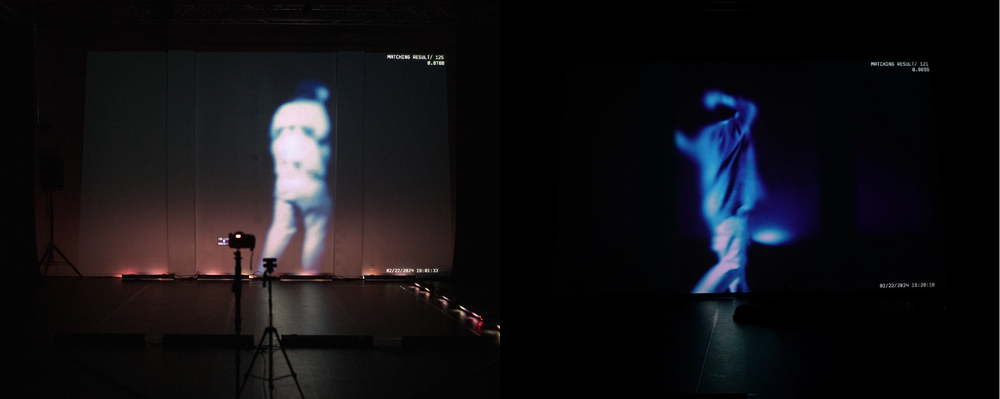
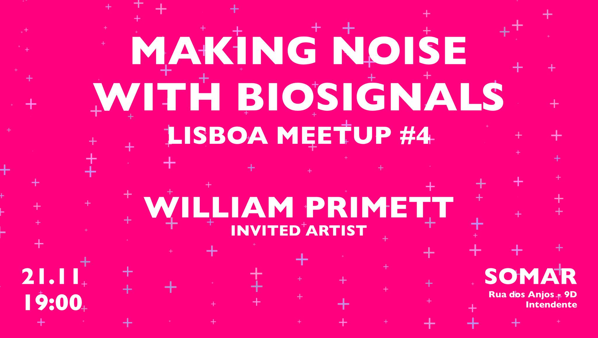

Supporting entrainment using latent space mappings and generative sound feedback during dyadic movement exercises. Primett, W., & Correia, N. N. (2026).

Paper PDF | Technical Documentation
Paper Presentation at Tangible, Embedded, and Embodied Interaction (TEI'26')
Designing for Kinaesthetic Empathy using Data-Driven Movement Matchingrm. Primett, W., & Correia, N. N. (2026).

Paper PDF | Technical Documentation
Paper Presentation at the International Conference on Digital and Interactive Arts: Media Art Cultures (ARTECH'25')
Latent Steps: Generative Bodily Animations From a Collection of Human Drawings and Physiological Data Interaction

Poster PDF | Video
Poster Presentation and Demo at DDCMC'19
Moving Digits – Artistic Residency and Performance
 More info |
Video
More info |
Video
Moving Digits – Artistic Residency and Performance at Sõltumatu Tantsu Lava, Tallinn, 2019
Making Noise With Biosignals

Event LinkArtist Talk & Workshop, SOMAR Lisboa Meetup #4, 2019
Coupling Biomedical Sensors with Choreographic Language
Video | Event ArchiveMovement and Computing Talk Series, Madeira Interactive Technologies Institute
Moving Digits (MODI) Soundsystem
VideoConcert and presentations at Barreirinha Bar Café (BBC)